Электронный
практикум
Задания
Задание №1
Для матриц А и В определить:
а) 3А + 4В;
б) АВ – ВА;
в) (А-В)-1.
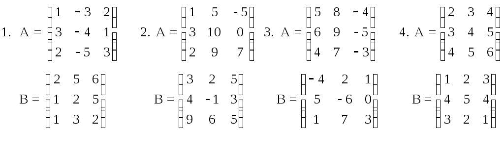
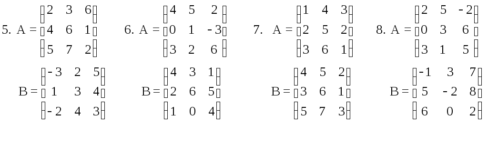
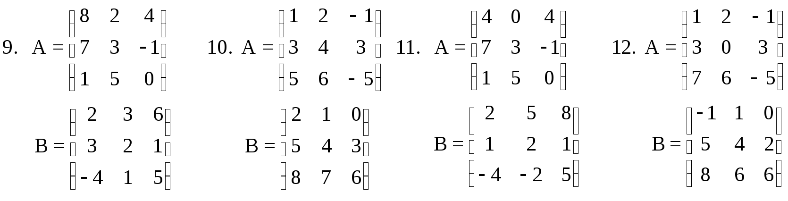
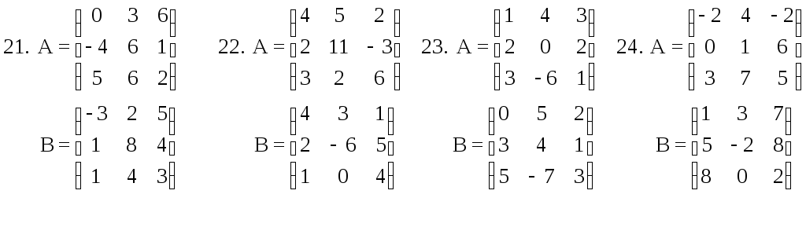
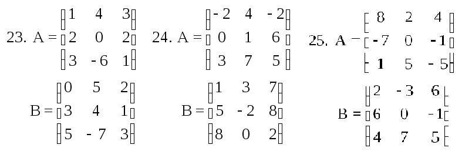
Задание №2
Вычислить следующие определители:
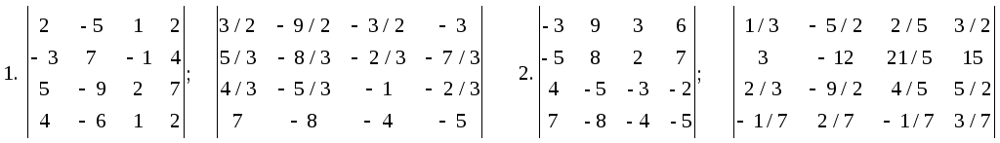
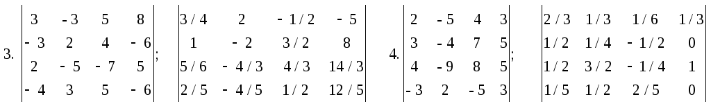


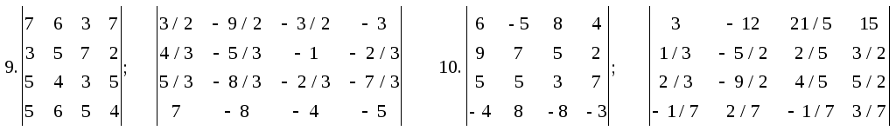
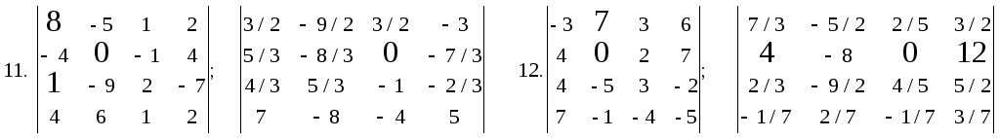
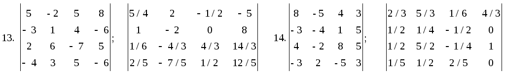
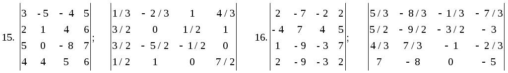
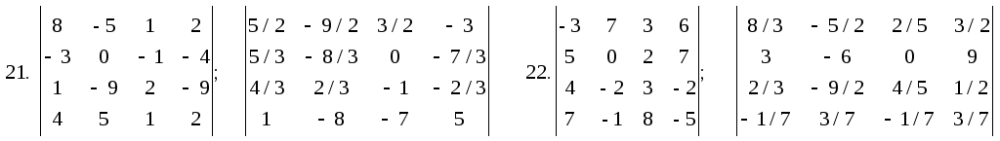
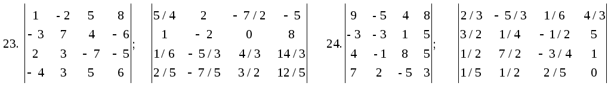
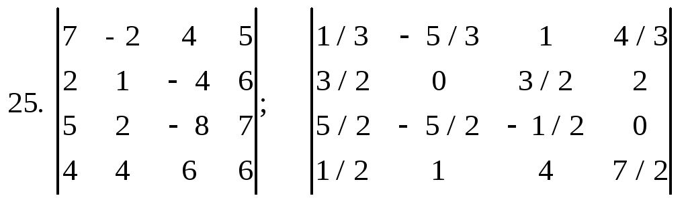
Задание №3
Решите систему линейных уравнений двумя способами (после решения необходимо выполнить проверку):
по формулам Крамера;
матричным способом.
1) 2X1 + 5X2 - 8X3 = 8
2X1 + 3X2 - 5X3 = 7
6X1 + 8X2 -17X3 = 17
2) X1 + 8X2 - 7X3 = 12
4X1 + 3X2 - 9X3 = 9
2X1 + 3X2 - 5X3 = 7
3) 2X1 + 3X2 - 5X3 = 7
4X1 + 3X2 - 9X3 = 9
4X1 + 3X2 + 9X3 = 9
4) 6X1 + 6X2 -14X3 = 16
5X1 +11X2 -16X3 = 21
2X1 + 5X2 - 8X3 = 8
5) -7X1 + 3X2 +8X3 = 75
X1 - 7X2 - 3X3 = 12
2X1 + 9X2 + 5X3 = -5
6) 13X1 - 6X2 = 32
9X1 - 4X2 = -3
8X1 +4X2 + 1X3 = 12
7) 7X1 - 4X2 = 61
9X1 - 6X2 - 2X3 = 99
X1 - 7X2 + 3X3 = -47
8) 6X1 + 3X2 + 9X3 = -111
8X1 +9X2 - 6X3 = 48
-7X1 - 4X2 - 2X3 = 52
9) -5X1 + 7X2 +11X3 = -2
3X1 - 5X2 + 4X3 = 11
5X1 - 2X2 +3X3 = -4
10) 2X1 + X2 + 3X3 = 11
2X1 + 6X2 + 3X3 = 11
3X1 + 2X2 - 5X3 = -20
11) 2X1 + 3X2 - 6X3 = 18
2X1 + 2X2 - 5X3 = 10
6X1 + 8X2 -17X3 = 17
12) X1 + 7X2 - 5X3 = 25
4X1 + 3X2 - 9X3 = 9
X1 + 3X2 - 5X3 = 15
13) 2X1 + 5X2 - 5X3 = 25
4X1 + 2X2 - X3 = 8
4X1 + 3X2 + 9X3 = 90
14) 6X1 + 2X2 -X3 = 16
5X1 +11X2 -16X3 = 21
2X1 + X2 - 8X3 = 36
15) -X1 + 3X2 +8X3 = 24
X1 - 7X2 - 3X3 = 12
2X1 + 9X2 + 5X3 = -5
16) 12X1 - 6X2 = 45
9X1 - 4X2 = -36
8X1 +X2 + 7X3 = 56
17) 7X1 - 4X2 = 60
9X1 - 6X2 - 2X3 = 99
X1 - 5X2 + 3X3 = -45
18) 6X1 + 2X2 + 9X3 = -81
8X1 +9X2 - 3X3 = 48
-7X1 - 4X2 - 2X3 = 52
19) -3X1 + 7X2 +5X3 = -20
3X1 - 5X2 + 4X3 = 90
5X1 - 12X2 +3X3 = -4
20) 2X1 + 5X2 + 3X3 = 110
2X1 + 6X2 + 2X3 = 120
3X1 + 2X2 - 3X3 = -20
21) 2X1 + 7X2 - 8X3 = 80
2X1 + 3X2 - 5X3 = 70
X1 + 8X2 -15X3 = 120
22) X1 + 8X2 - 3X3 = 90
14X1 + 3X2 - 9X3 = 90
2X1 + 3X2 - 5X3 = 70
23) 2X1 + 3X2 - X3 = 7
X1 + 3X2 - 9X3 = 9
4X1 + 3X2 + 9X3 = 90
24) 6X1 + 6X2 -X3 = 16
5X1 +5X2 -16X3 = 25
5X1 + 5X2 - 8X3 = 80
25) -7X1 + 3X2 +8X3 = 64
9X1 - 4X2 = -30
X1 - 7X2 - 2X3 = 14
Задание №4
Решить системы линейных уравнений методом Жордана–Гаусса
1) 2Х1 + Х2 + Х3 = 2
Х1+3Х2 + Х3 = 5
3Х1 + Х2 - 5Х3 = 0
2Х1+3Х2 - 3Х3 = 14
2) 2Х1 - Х2 + 3Х3 = 3
Х1 +Х2 +5Х3 = -7
4Х1 - Х2 + Х3 = 3
Х1 + 3Х2 -13Х3 = -6
3) Х1 + Х2 + Х3 + Х4 = 6
Х1 + Х2 - Х3 - Х4 = 0
2Х1 - Х2 - 3Х4 = 2
Х1 - Х2 + Х3 - Х4 = 4
4) 2Х1 - Х2 + Х3 - Х4 = 1
3Х1 - Х3 + Х4 - 5Х4 = -3
Х1 - Х2 - Х3 + Х4 = 2
2Х1+2Х2 -2Х3+ 5Х4 = -6
5) Х1 + Х2 + Х3 + Х4 = 0
Х2 + Х3 +Х4 +Х5 = 0
5Х1+18Х2 + 4Х3 + 5Х4 = 12
Х1 +2Х2 +3Х3 = 2
6) Х1 +5Х2 - 9Х3 + 8Х4 = 1
2Х1 +7Х2 +3Х3 + 4Х4 = 5
1X+Х2 + Х3+3Х4 = -2
1Х1 +3Х2 +5Х3 - 2Х4 = 3
7) 2Х1 + 3Х2 + 9Х3 -7Х4 = 3
8Х1 +12Х2 - 9Х3 +8Х4 = 3
2Х1+ 7Х2 + 3Х3 + Х4 = 6
4Х1 + 6Х2 + 3Х3 - 2Х4 = 3
8) 9Х1 +4Х2 + Х3 + 7Х4 = 2
2Х1 - 3Х2 + 5Х3 + 7Х4 = 1
3Х1+ 4Х2 + Х3 + 2Х4 = 3
+4Х1 - 6Х2 + 2Х3 + 3Х4 = 2
9) 2Х1 - 3Х2 - 11Х3 -15Х4 = 1
3Х1 - 5Х2 +2Х3 +4Х4 = 2
2Х1+2Х2 + 4Х3 -Х4 +3Х5 = 2
5Х1 + 7Х2 - 4Х3 - 6Х4 = 3
10) 9Х1+12Х2 + 3Х3 +10Х4 = 13
3Х1 - 2Х2 +2Х3 - 3Х4 = 2
2Х1 + Х2 - Х3 + Х4 = 1
5Х1 + Х2 - Х3 + 2Х4 = 1
Задание №5
В естественном базисе заданы векторы. Установить, составляют ли они базис. Если составляют, то найти связь между новым и старым базисами, а также в новом базисе найти компоненты вектора .
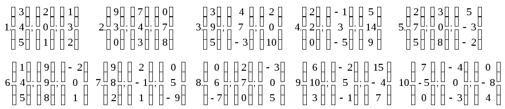
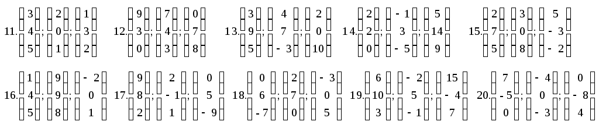
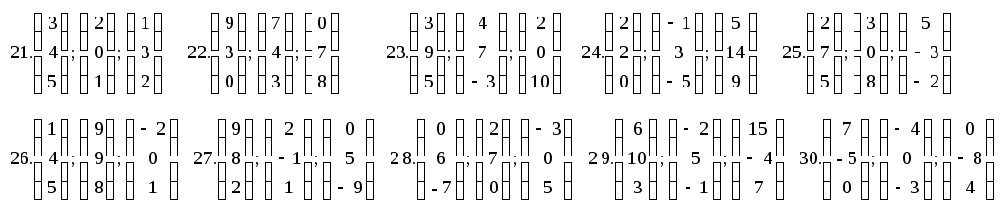